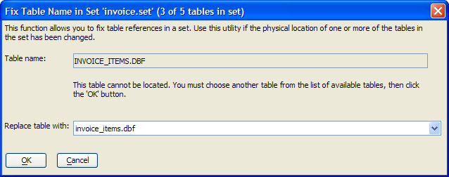

Repair Set Structure
The Fix Table Name in Set dialog allows you to fix table references in a set when the location of one or more tables in the set has changed.

To fix a table reference:
Display the Tables/Sets tab of the Control Panel.
Select the set to be repaired.
Select Set > Utilities > Repair Set... .
If the dialog message says that the table cannot be located, click to navigate to and select the missing table. Otherwise, click OK.
Continue clicking OK until you have sequenced through all the tables of the set.
See Also
A5_RepairSetStructure(), Create and Restructure Sets